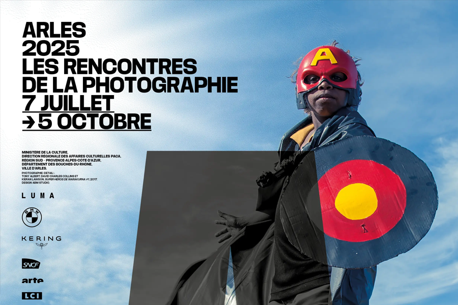

Arles devient chaque été la capitale mondiale de la photographie contemporaine avec les Rencontres d'Arles, créées en 1970. Le festival attire plus de 100 000 visiteurs et investit lieux patrimoniaux et friches industrielles — chapelles, cloîtres, anciens ateliers SNCF — pour faire dialoguer images et architecture. L'édition 2025, intitulée « Images indociles » et dirigée par Christoph Wiesner, explore le pouvoir subversif de la photographie face aux tensions politiques, sociales et climatiques. Les expositions interrogent les récits dominants, les représentations du genre, de l'histoire et du territoire. À travers plus de 20 lieux, le parcours propose une déambulation engagée, où l'image devient outil de résistance et de reconstruction collective. Parmi les temps forts : On Country, qui réunit des artistes aborigènes et non-aborigènes autour du lien sacré à la terre australienne, et Futurs ancestraux, plongée dans la scène brésilienne contemporaine, entre héritages afro, indigènes et queer.